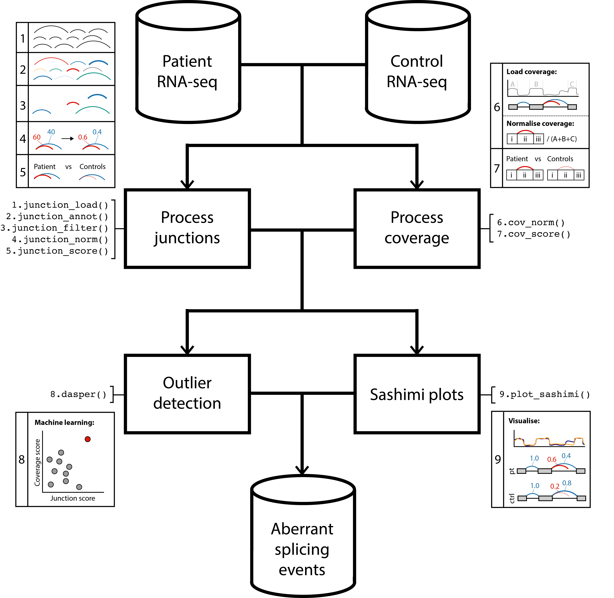

vignettes/dasper.Rmd
dasper.Rmddasper
R is an open-source statistical environment which can be easily modified to enhance its functionality via packages. dasper is a R package available via the Bioconductor repository for packages. R can be installed on any operating system from CRAN after which you can install dasper by using the following commands in your R session:
if (!requireNamespace("BiocManager", quietly = TRUE)) { install.packages("BiocManager") } BiocManager::install("dasper") ## Check that you have a valid Bioconductor installation BiocManager::valid()
The expected input of dasper are junctions reads (outputted from an aligner such as STAR) and coverage in the form of BigWig files (which can be generated from BAM files using RSeQC.dasper is based on many other packages and in particular in those that have implemented the infrastructure needed for dealing with RNA-seq data. The packages SummarizedExperiment and GenomicRanges are used throughout, therefore familiarity with these packages will greatly help in interpreting the output of dasper.
If you are asking yourself the question “Where do I start using Bioconductor?” you might be interested in this blog post.
As package developers, we try to explain clearly how to use our packages and in which order to use the functions. But R and Bioconductor have a steep learning curve so it is critical to learn where to ask for help. The blog post quoted above mentions some but we would like to highlight the Bioconductor support site as the main resource for getting help: remember to use the dasper tag and check the older posts. Other alternatives are available such as creating GitHub issues and tweeting. However, please note that if you want to receive help you should adhere to the posting guidelines. It is particularly critical that you provide a small reproducible example and your session information so package developers can track down the source of the error.
dasper
We hope that dasper will be useful for your research. Please use the following information to cite the package and the overall approach. Thank you!
## Citation info citation("dasper") #> #> dzhang32 (2020). _Detecting abberant splicing events from #> RNA-sequencing data_. doi: 10.18129/B9.bioc.dasper (URL: #> https://doi.org/10.18129/B9.bioc.dasper), #> https://github.com/dzhang32/dasper - R package version 0.99.0, <URL: #> http://www.bioconductor.org/packages/dasper>. #> #> dzhang32 (2020). "Detecting abberant splicing events from #> RNA-sequencing data." _bioRxiv_. doi: 10.1101/TODO (URL: #> https://doi.org/10.1101/TODO), <URL: #> https://www.biorxiv.org/content/10.1101/TODO>. #> #> To see these entries in BibTeX format, use 'print(<citation>, #> bibtex=TRUE)', 'toBibtex(.)', or set #> 'options(citation.bibtex.max=999)'.
dasper
knitr::include_graphics("dasper_workflow.png")

The above workflow diagram gives a top-level overview of the core functions within dasper and describes the order in which they are intended to be run. This are broadly split into 4 categories:
The dasper package (dzhang32, 2020) was made possible thanks to:
This package was developed using biocthis.
Code for creating the vignette
## Create the vignette library("rmarkdown") system.time(render("dasper.Rmd", "BiocStyle::html_document")) ## Extract the R code library("knitr") knit("dasper.Rmd", tangle = TRUE)
## Clean up file.remove("dasper.bib") #> [1] TRUE
Date the vignette was generated.
#> [1] "2020-08-04 11:59:21 UTC"Wallclock time spent generating the vignette.
#> Time difference of 5.972 secsR session information.
#> ─ Session info ───────────────────────────────────────────────────────────────────────────────────────────────────────
#> setting value
#> version R version 4.0.2 (2020-06-22)
#> os Ubuntu 20.04.1 LTS
#> system x86_64, linux-gnu
#> ui X11
#> language (EN)
#> collate en_US.UTF-8
#> ctype en_US.UTF-8
#> tz UTC
#> date 2020-08-04
#>
#> ─ Packages ───────────────────────────────────────────────────────────────────────────────────────────────────────────
#> package * version date lib source
#> assertthat 0.2.1 2019-03-21 [2] RSPM (R 4.0.0)
#> backports 1.1.8 2020-06-17 [2] RSPM (R 4.0.1)
#> bibtex 0.4.2.2 2020-01-02 [1] RSPM (R 4.0.0)
#> Biobase 2.49.0 2020-04-27 [1] Bioconductor
#> BiocGenerics 0.35.4 2020-06-04 [1] Bioconductor
#> BiocManager 1.30.10 2019-11-16 [2] CRAN (R 4.0.2)
#> BiocStyle * 2.17.0 2020-04-27 [1] Bioconductor
#> bitops 1.0-6 2013-08-17 [1] RSPM (R 4.0.0)
#> bookdown 0.20 2020-06-23 [1] RSPM (R 4.0.2)
#> cli 2.0.2 2020-02-28 [2] RSPM (R 4.0.0)
#> crayon 1.3.4 2017-09-16 [2] RSPM (R 4.0.0)
#> dasper * 0.99.0 2020-08-04 [1] Bioconductor
#> DelayedArray 0.15.7 2020-07-14 [1] Bioconductor
#> desc 1.2.0 2018-05-01 [2] RSPM (R 4.0.0)
#> digest 0.6.25 2020-02-23 [2] RSPM (R 4.0.0)
#> dplyr 1.0.0 2020-05-29 [1] RSPM (R 4.0.0)
#> ellipsis 0.3.1 2020-05-15 [2] RSPM (R 4.0.0)
#> evaluate 0.14 2019-05-28 [2] RSPM (R 4.0.0)
#> fansi 0.4.1 2020-01-08 [2] RSPM (R 4.0.0)
#> fs 1.4.2 2020-06-30 [2] RSPM (R 4.0.2)
#> generics 0.0.2 2018-11-29 [1] RSPM (R 4.0.0)
#> GenomeInfoDb 1.25.8 2020-07-03 [1] Bioconductor
#> GenomeInfoDbData 1.2.3 2020-07-06 [1] Bioconductor
#> GenomicRanges 1.41.5 2020-06-09 [1] Bioconductor
#> glue 1.4.1 2020-05-13 [2] RSPM (R 4.0.0)
#> htmltools 0.5.0 2020-06-16 [2] RSPM (R 4.0.1)
#> httr 1.4.2 2020-07-20 [2] RSPM (R 4.0.2)
#> IRanges 2.23.10 2020-06-13 [1] Bioconductor
#> jsonlite 1.7.0 2020-06-25 [2] RSPM (R 4.0.2)
#> knitcitations * 1.0.10 2019-09-15 [1] RSPM (R 4.0.0)
#> knitr 1.29 2020-06-23 [2] RSPM (R 4.0.2)
#> lattice 0.20-41 2020-04-02 [3] CRAN (R 4.0.2)
#> lifecycle 0.2.0 2020-03-06 [2] RSPM (R 4.0.0)
#> lubridate 1.7.9 2020-06-08 [1] RSPM (R 4.0.2)
#> magrittr 1.5 2014-11-22 [2] RSPM (R 4.0.0)
#> Matrix 1.2-18 2019-11-27 [3] CRAN (R 4.0.2)
#> matrixStats 0.56.0 2020-03-13 [1] RSPM (R 4.0.0)
#> memoise 1.1.0 2017-04-21 [2] RSPM (R 4.0.0)
#> pillar 1.4.6 2020-07-10 [2] RSPM (R 4.0.2)
#> pkgconfig 2.0.3 2019-09-22 [2] RSPM (R 4.0.0)
#> pkgdown 1.5.1.9000 2020-07-25 [1] Github (r-lib/pkgdown@eae56f0)
#> plyr 1.8.6 2020-03-03 [1] RSPM (R 4.0.0)
#> purrr 0.3.4 2020-04-17 [2] RSPM (R 4.0.0)
#> R6 2.4.1 2019-11-12 [2] RSPM (R 4.0.0)
#> Rcpp 1.0.5 2020-07-06 [2] RSPM (R 4.0.2)
#> RCurl 1.98-1.2 2020-04-18 [1] RSPM (R 4.0.0)
#> RefManageR 1.2.12 2019-04-03 [1] RSPM (R 4.0.0)
#> rlang 0.4.7 2020-07-09 [2] RSPM (R 4.0.2)
#> rmarkdown 2.3 2020-06-18 [1] RSPM (R 4.0.1)
#> rprojroot 1.3-2 2018-01-03 [2] RSPM (R 4.0.0)
#> S4Vectors 0.27.12 2020-06-09 [1] Bioconductor
#> sessioninfo * 1.1.1 2018-11-05 [2] RSPM (R 4.0.0)
#> stringi 1.4.6 2020-02-17 [2] RSPM (R 4.0.0)
#> stringr 1.4.0 2019-02-10 [2] RSPM (R 4.0.0)
#> SummarizedExperiment 1.19.6 2020-07-09 [1] Bioconductor
#> tibble 3.0.3 2020-07-10 [2] RSPM (R 4.0.2)
#> tidyselect 1.1.0 2020-05-11 [1] RSPM (R 4.0.0)
#> vctrs 0.3.2 2020-07-15 [2] RSPM (R 4.0.2)
#> withr 2.2.0 2020-04-20 [2] RSPM (R 4.0.0)
#> xfun 0.16 2020-07-24 [2] RSPM (R 4.0.2)
#> xml2 1.3.2 2020-04-23 [2] RSPM (R 4.0.0)
#> XVector 0.29.3 2020-06-25 [1] Bioconductor
#> yaml 2.2.1 2020-02-01 [2] RSPM (R 4.0.0)
#> zlibbioc 1.35.0 2020-04-27 [1] Bioconductor
#>
#> [1] /usr/local/lib/R/host-site-library
#> [2] /usr/local/lib/R/site-library
#> [3] /usr/local/lib/R/libraryThis vignette was generated using BiocStyle (Oleś, Morgan, and Huber, 2020) with knitr (Xie, 2020) and rmarkdown (Allaire, Xie, McPherson, Luraschi, et al., 2020) running behind the scenes.
Citations made with knitcitations (Boettiger, 2019).
[1] J. Allaire, Y. Xie, J. McPherson, J. Luraschi, et al. rmarkdown: Dynamic Documents for R. R package version 2.3. 2020. <URL: https://github.com/rstudio/rmarkdown>.
[2] C. Boettiger. knitcitations: Citations for ‘Knitr’ Markdown Files. R package version 1.0.10. 2019. <URL: https://github.com/cboettig/knitcitations>.
[3] G. Csárdi, R. core, H. Wickham, W. Chang, et al. sessioninfo: R Session Information. R package version 1.1.1. 2018. <URL: https://github.com/r-lib/sessioninfo#readme>.
[4] dzhang32. Detecting abberant splicing events from RNA-sequencing data. https://github.com/dzhang32/dasper - R package version 0.99.0. 2020. DOI: 10.18129/B9.bioc.dasper. <URL: http://www.bioconductor.org/packages/dasper>.
[5] A. Oleś, M. Morgan, and W. Huber. BiocStyle: Standard styles for vignettes and other Bioconductor documents. R package version 2.17.0. 2020. <URL: https://github.com/Bioconductor/BiocStyle>.
[6] R Core Team. R: A Language and Environment for Statistical Computing. R Foundation for Statistical Computing. Vienna, Austria, 2020. <URL: https://www.R-project.org/>.
[7] H. Wickham. “testthat: Get Started with Testing”. In: The R Journal 3 (2011), pp. 5-10. <URL: https://journal.r-project.org/archive/2011-1/RJournal_2011-1_Wickham.pdf>.
[8] Y. Xie. knitr: A General-Purpose Package for Dynamic Report Generation in R. R package version 1.29. 2020. <URL: https://yihui.org/knitr/>.